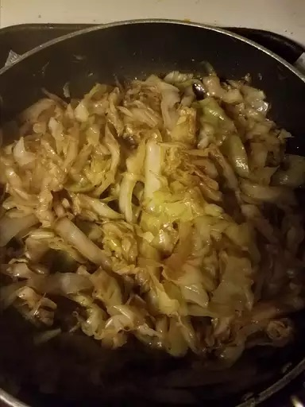

Super Easy Stir-fried Cabbage

Decription
A cabbage stir-fry recipe that's very simple to make.
Using only soy sauce in this recipe brings out the natural sweetness in the cabbage.
Ingredients
- 1 tablespoon vegetable oil
- 2 cloves garlic, minced
- 1 pound shredded cabbage
- 1 tablespoon soy sauce
- 1 tablespoon Chinese cooking wine (Shaoxing wine)
Steps
- Heat vegetable oil in a wok or large skillet over medium heat. Stir in garlic and cook until it begins to brown, 3 to 5 seconds.
- Stir in cabbage until coated in oil; cover the wok and cook for 1 minute.
- Pour in soy sauce; cook and stir for another minute. Increase heat to high and stir in Chinese cooking wine. Cook and stir until cabbage is tender, about 2 minutes more.
- Serve hot and enjoy!